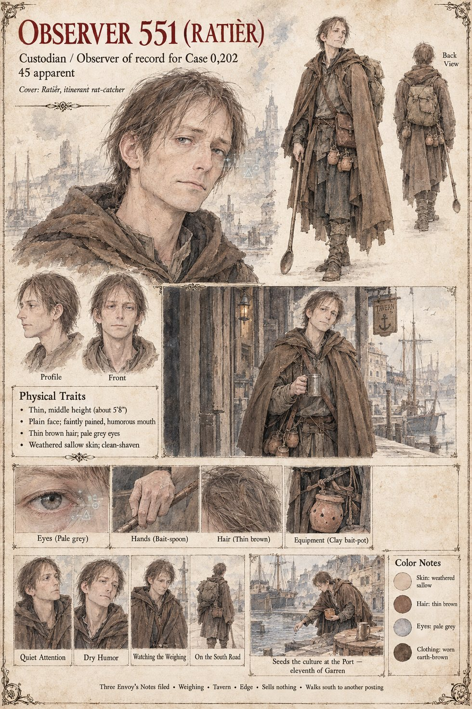

Observer 551
Cultivator Envoy and Custodian of record for Case 0202 · cover: Ratièr, an itinerant rat-catcher · appears about 45 by his sheet
A thin, plain, forgettable man in a brown travelling cloak with a pack, a long bait-spoon and a satchel of clay pots, who has walked the Lauze for nineteen days by the evening of the twentieth of Garren under the name Ratièr, which in the dialect is a trade and not a name. A rat-catcher passes through every mill, barn and cellar of a grain valley without question, which is the access the study needs and the only access it needs. On the eleventh of Garren he breaks a sealed clay bait-pot with the spoon, by hand, in the upper broom-scrub of the saddle called the Port, where the swarm's first night's roost will fall, in the manner of a man laying poison for vermin in a place that has none. He supplies no knowledge; he introduces one organism and lets it do what it does, and the banding on its fruiting collar is the only signature he leaves.
He attends the weighing at the mill offering bait, sits at the table by the door in Brunissen's tavern with a mug of ale he does not drink and takes Gaucelm's tin ward, turns it over with great gravity and hands it back, and on the fifth night stands on the lip of the second rank with a bait-pot and sells nothing. He files three Envoy's Notes. He records an apology on an instrument not calibrated to record one, does not apply his translation array to the stranger's speech because the Prime Directive bars supplying a framework, and finds he cannot stop knowing the syllables of a five-line verse he did not translate. Three times he passes the other Custodian, Observer 618 of Case 2231, once on the quarry road, once at the quarrymen's wall and once on the lane below Vilarnau walking toward the mill with a lantern, each in the character of a man with nothing to say to the other, and the courtesy is exact. In a later spring he goes down the long south road with his pack and his bait-spoon to a country where the rats are of a different kind. The sheet's 5'8", thin brown hair, pale grey eyes and apparent age of forty-five are its own; the manuscript has only “thin, middle-aged, brown-cloaked, with a pack.”
“He is not supposed to find that difficult to put down. Filed.”
Appears In

Related Subjects


Related Records
![A packed low-ceilinged tavern lit orange by a hearth and candles, a broad laughing woman in a dark bodice and white sleeves at the upper left holding up a mug, a lean bearded man in a white head-cloth and striped cloak at the centre with a cup of red wine glancing aside, a leathery man in a brown cloak holding a small tin disk up between finger and thumb, other drinkers leaning on elbows on benches and barrels, coins and tin cups on the stained table in the foreground and a window of dark blue night at the upper right](../images/scenes/what-the-tavern-knew-grid.jpg)
On the first of Havren the tavern at Vilarnau holds forty on benches and barrels: Brunissen says somebody has to dig a hole, Ibrahim ibn Nasr has just told the room that in the south they eat the Weather, Gaucelm sells tin wards, and Observer 551, as a rat-catcher, listens by the door.